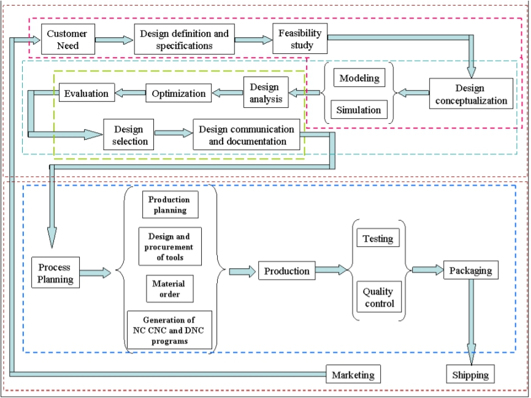

NX電子書整理 <<
Previous Next >> CH2入門教學
CH1 介紹
現代製造環境的特徵在於交付範式 在不斷增加的背景下，品種不斷增加，批次更小，質量更高的產品 全球競爭。除非引進新的產業，否則它們將無法在全球競爭中生存 產品質量更高，成本更低，交付週期更短。有激烈 國際競爭和熟練勞動力的減少。隨著變化 計算能力和更廣泛的設計和生產軟件工具可用性，工程師們 現在使用計算機輔助設計（CAD），計算機輔助製造（CAM）和計算機 輔助工程（CAE）系統可使其設計和生產過程自動化。這些 現在，技術每天都用於各種不同的工程任務。下面是一個簡短的 產品期間如何使用CAD，CAM和CAE技術的說明 實現過程。
1.1產品實現過程
產品實現過程可以大致分為兩個階段：設計和製造。
設計過程從識別新客戶需求和要設計的變量開始
改進，由營銷人員從
顧客。一旦收集了相關的設計信息，就制定了設計規範。
進行可行性研究並提供相關設計信息以及詳細的設計和分析
執行。詳細設計包括設計概念化，預期產品
圖紙，草圖和幾何建模。分析包括壓力分析，干擾
檢查，運動學分析，質量特性計算和公差分析以及設計
優化。從這些活動中獲得的結果的質量與
分析的質量以及進行分析的工具。
製造過程從生產開始的車間活動開始
規劃，使用設計過程圖並以實際產品結束。處理
規劃包括生產計劃，材料採購和機器等活動
選擇。有各種各樣的任務，例如購買新工具，NC編程和質量
在生產過程的各個階段進行檢查。流程計劃包括所有計劃
產品製造中使用的過程。通過質量控制檢查的零件
進行功能測試，包裝，貼標籤並運送給客戶。
表示產品實現過程的圖（Ibrahim Zeid撰寫的Mastering CAD / CAM，
麥格勞·希爾（McGraw Hill，2005）。

1.2 CAD / CAM開發的簡要歷史
當前的CAD / CAM技術的起源可以追溯到文明的開始
古埃及的工程師認可圖形通信。正交投影實踐
今天是在1800年代發明的。 CAD / CAM系統的真正開發始於
1950年代。 CAD / CAM在上個世紀經歷了四個主要的發展階段。 1950年代
被稱為交互式計算機圖形時代。麻省理工學院伺服機構實驗室
在三軸銑床上演示了數控（NC）的概念。發展歷程
在這個時代，由於當時計算機的缺點而放慢了速度。 1950年代後期
開始開發自動編程工具（APT），並探索通用汽車公司
互動圖形的潛力。
1960年代是交互式計算機圖形學最關鍵的研究時期。伊万·薩瑟蘭
開發了一個畫板系統，該系統演示了創建圖紙的可能性以及
在陰極射線管（CRT）上以交互方式進行對象交替。 CAD一詞開始出現
“設計”一詞超出了基本的製圖概念。通用汽車宣布了他們的
DAC-1系統和Bell Technologies推出了GRAPHIC 1遠程顯示系統。
1970年代，計算機圖形學的前十年研究開始
富有成果，並實現了交互式計算機圖形在提高生產力方面的潛力
按行業，政府和學術界。 1970年代被描述為計算機的黃金時代
起草和特別儀器設計應用程序的開始。國家計算機
圖形協會（NCGA）成立，並且初始圖形交換規範（IGES）
開始了。
在1980年代，新的理論和算法得到了發展，並且將各種設計要素整合在一起
並發展了製造業。主要的研發重點是擴大
CAD / CAM系統超越了三維幾何設計，提供了更多的工程設計
應用程序。
當前的CAD / CAM開發側重於高效，快速的集成和自動化
設計和製造的各種要素以及新算法的開發。
有許多商業化的CAD / CAM軟件包可用於用戶友好的直接使用
而且非常熟練
以下是當前市場中的一些商業軟件包。
•Solid Edge，AutoCAD，Inventor和TurboCAD是一些負擔得起的CAD軟件
系統。
•NX，Pro-E，CATIA和SolidWorks是高端建模和設計軟件
更昂貴但功能更強大的系統。這些軟件系統還具有計算機
輔助的製造和工程分析功能。
•Onshape和Fusion 360是基於雲的CAD軟件，可提供CAD功能
通過用戶的瀏覽器。
•ANSYS，ABAQUS，NASTRAN和COMSOL是主要用於CAE的軟件包
目的。
1.3 CAD / CAM / CAE的定義
以下是本教程中使用的一些術語的定義。
1.3.1計算機輔助設計– CAD
CAD是與使用計算機系統協助創建，修改，
分析和優化設計。任何體現計算機圖形的計算機程序
可以對在設計過程中促進工程功能的應用程序進行分類
作為CAD軟件。
CAD的最基本作用是定義設計的幾何形狀-機械零件，產品
組裝，建築結構，電子電路，建築物佈局等。
CAD系統的好處是可以節省大量時間並減少由
否則，每次需要時，都必須從頭開始重新定義設計的幾何形狀。
1.3.2計算機輔助製造– CAM
CAM技術涉及計劃，管理和控制製造的計算機系統
通過計算機界面與工廠的生產資源進行操作。
CAM最重要的領域之一是數控（NC）。這是使用的技巧
用於控制機床的程序化指令，該機床可以進行原始的切削，銑削，磨削，沖壓或車削
庫存成成品。 CAM的另一個重要功能是在機器人編程中。
流程計劃也是計算機自動化的目標。
1.3.3計算機輔助工程– CAE
CAE技術使用計算機系統來分析CAD創建的產品的功能，
允許設計師模擬和研究產品的行為，以便設計
完善和優化。
CAE工具可用於許多不同類型的分析。例如運動學
分析程序可用於確定機構中的運動路徑和連桿速度。
動態分析程序可用於確定複雜結構中的載荷和位移
裝配，例如汽車。最受歡迎的分析方法之一是使用有限
元素方法（FEM）。該方法可用於確定應力，變形，傳熱，
磁場分佈，流體流動以及其他通常很難解決的連續磁場問題
用其他方法解決。
1.4。本教程的範圍
本教程是為有興趣學習如何使用NX 12的學生和工程師編寫的
用於設計機械零件和組件。學習使用NX 12也將很有價值
學習如何使用其他CAD系統，例如PRO-E和CATIA。本教程提供了
學習NX 12的系統方法。
第2章介紹了從開始會話到熟悉NX的NX 12基本知識。
通過練習基本功能（如打印，保存和退出）來佈局12。它還給出了簡短的描述
坐標系，圖層，各種工具箱和其他重要命令
在後面的章節中使用。
第3章介紹了素描的概念。它描述瞭如何創建草圖並給出
幾何和尺寸約束。從今天開始，這一章非常重要
組件的幾何形狀非常複雜，僅憑基本特徵很難建模。
零件的實際設計和建模始於第4章。它描述了不同的功能
例如參考特徵，掃描特徵和原始特徵，以及如何使用這些特徵
創建設計。對特徵執行各種特徵操作。
您將在第5章中學習如何從零件模型創建工程圖。在本章中，我們將
通過添加視圖，標註零件圖紙尺寸來演示如何創建圖紙，以及
修改圖形中的各種屬性，例如文本大小，箭頭大小和公差。
第6章介紹了裝配建模的概念及其術語。它描述了TopDown建模和Bottom-Up建模。我們將使用自下而上的模型進行組裝
組件變成產品。
第7章介紹了自由格式建模。曲線和平滑曲面的建模方法
將被演示。
第8章概述了NX 12中提供的Design Simulations的簡要介紹。
有限元分析。
第9章將是在製造中實施設計模型的實時經驗
加工環境。本章介紹工具的生成，驗證和模擬
創建CNC（計算機數字代碼）以從多軸生產設計零件的路徑
甚至先進的CNC機器。
每章中使用的示例和練習問題都經過精心設計，以使它們最終得以應用
組裝在本章中。由於這項獨特的功能，您應該保存所有的模型
在每一章中都有創建。
NX電子書整理 <<
Previous Next >> CH2入門教學